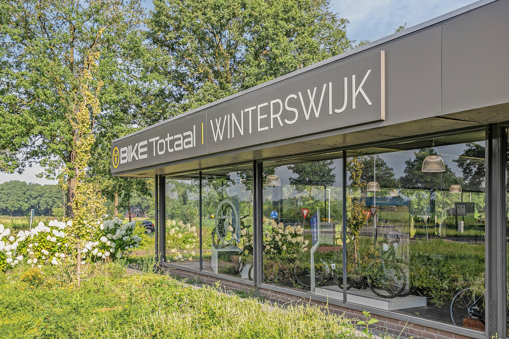
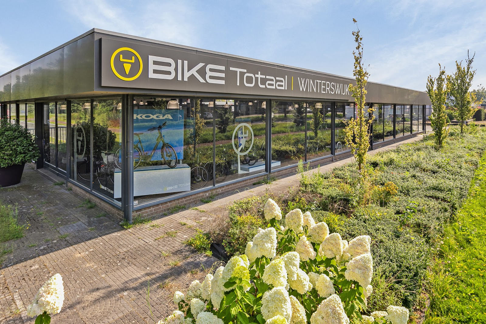
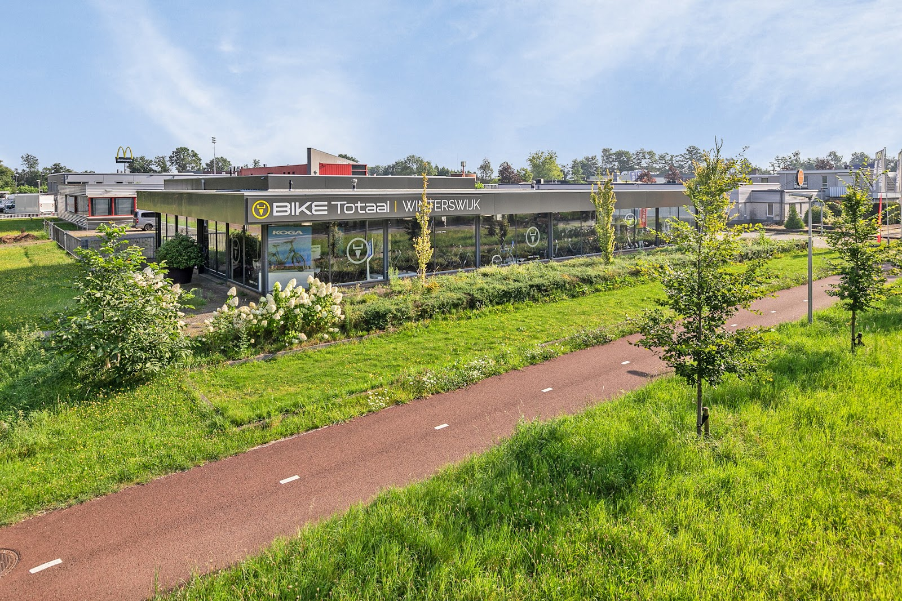
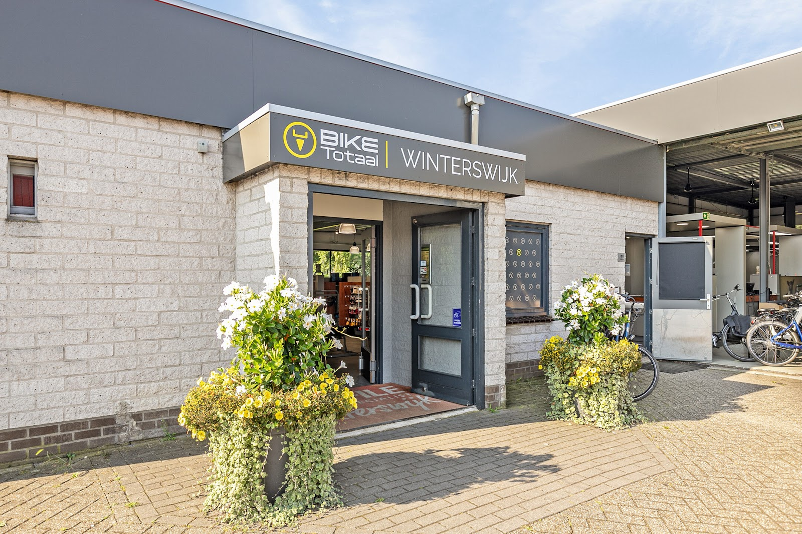
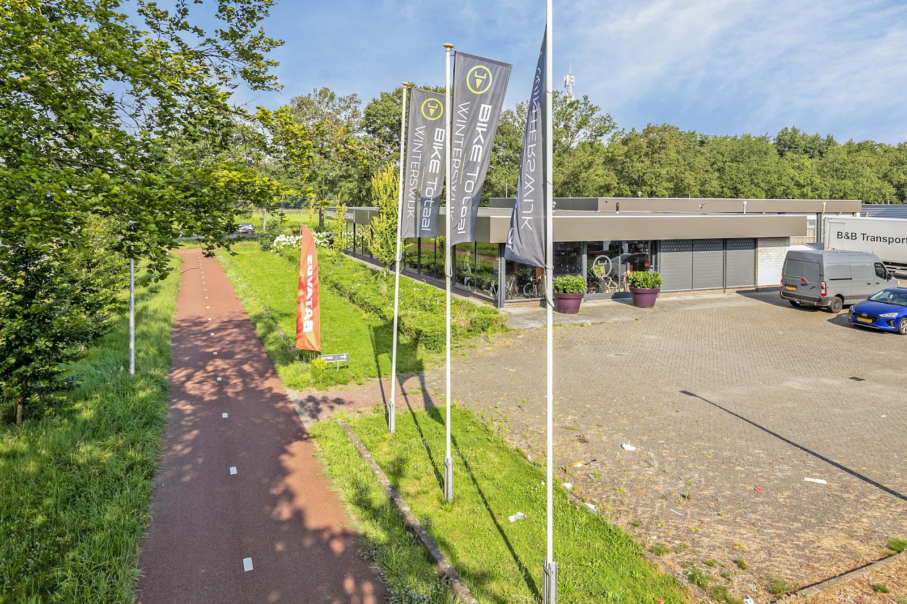

Europark 11, Winterswijk
De fietsenwinkel aan het fietspad.
Een nieuwe fiets uitzoeken, uw fiets laten repareren of uw oude fiets inruilen. Loop binnen voor advies, of bel ons even.
Dinsdag tot en met vrijdag 9:00 tot 17:30, zaterdag 9:00 tot 16:00.

- Kopen
- Repareren
- Inruilen
Een fiets die bij u past.
Een fiets koop je niet van een plaatje. Daarom nemen we de tijd: hoe ver fietst u, waarheen, en wat moet de fiets kunnen? Pas dan zoeken we samen het model uit.

Nieuwe fiets uitzoeken
Gewone fiets of elektrisch: in de winkel ziet u de fietsen in het echt en krijgt u uitleg van mensen die er verstand van hebben. Een klant schreef na de aankoop: "De fiets is een droom. Fietsen is nu weer leuk."
Reparatie en onderhoud
Lekke band, remmen die piepen of een elektrische fiets die niet doet wat hij moet doen. Breng hem langs of bel even, dan kijken we ernaar. Klanten noemen het zelf: snelle reparaties.
Uw oude fiets inruilen
Toe aan iets nieuws? Neem uw huidige fiets mee, ook een oudere elektrische fiets. Dan regelen we de inruil bij de aankoop van uw nieuwe fiets.
Wat klanten zeggen
4,6 van 5 op Google, uit 64 reviews
"Onlangs een nieuwe fiets gekocht en zoals de afgelopen 30 jaar was de afhandeling weer perfect! Prima medewerkers die staan voor klantvriendelijkheid en deskundig advies!"
"Hartelijk dank voor het feit dat u mij op korte termijn de Avignon C 380 heeft kunnen bezorgen. Het contact was hoffelijk, behulpzaam en vriendelijk. De fiets is een droom. Fietsen is nu weer leuk. Mijn oude pedelec werd zonder problemen ingeruild. We zijn over het algemeen zeer tevreden!"
"Goed geholpen, snel en kundig en nu zijn we alleen maar erg blij met onze fietsen. Voor ons perfect👌"
"Zeer vriendelijke mensen weten precies wat voor fiets bij je past goeie service"
"Vriendelijk ,professioneel, behulpzaam, snelle reparaties, zeker aan te bevelen"
Langskomen
| Maandag | Gesloten |
| Dinsdag | 9:00 tot 17:30 |
| Woensdag | 9:00 tot 17:30 |
| Donderdag | 9:00 tot 17:30 |
| Vrijdag | 9:00 tot 17:30 |
| Zaterdag | 9:00 tot 16:00 |
| Zondag | Gesloten |
Europark 11
7102 AN Winterswijk


